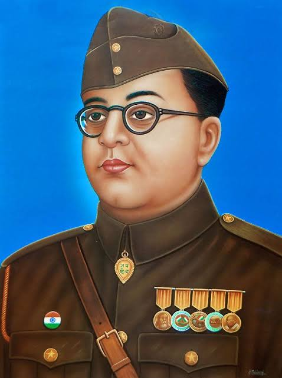

Netaji Subhas Chandra Bose
1897 - 1945
2nd Leader of Indian National Army
Subhas Chandra Bose (/ʃʊbˈhɑːs ˈtʃʌndrə ˈboʊs/ ⓘ shuub-HAHSS CHUN-drə BOHSS;[12] 23 January 1897 – 18 August 1945) was an Indian nationalist whose defiance of British authority in India made him a hero among many Indians, but his wartime alliances with Nazi Germany and Imperial Japan left a legacy vexed by authoritarianism, anti-Semitism, and military failure. The honorific 'Netaji' (Bengali: "Respected Leader") was first applied to Bose in Germany in early 1942—by the Indian soldiers of the Indische Legion and by the German and Indian officials in the Special Bureau for India in Berlin. It is now used throughout India.
| | Biography | |
- Gilbert, Martin (2009), The Routledge Atlas of the Second World War (2nd ed.), Routledge, p. 227, ISBN 978-0-415-55289-9, Bose died in a plane crash off Taiwan, while being flown to Tokyo on 18 August 1945, aged 48. For many millions of Indians, especially in Bengal, he remains a revered figure
- Huff, Gregg (2020), World War II and Southeast Asia: Economy and Society under Japanese Occupation, Cambridge University Press, p. xvi, ISBN 978-1-107-09933-3, LCCN 2020022973, archived from the original on 12 July 2023, retrieved 28 January 2022, Chronology of World War II in the Pacific: 18 August 1945 Subhas Chandra Bose killed in a plane crash in Taiwan.
- Satoshi, Nakano (2012), Japan's Colonial Moment in Southeast Asia 1942–1945: The Occupiers' Experience, London and New York: Routledge, p. 211, ISBN 978-1-138-54128-3, LCCN 2018026197, 18 August 1945. Upon hearing of Japan's defeat in the Pacific War, Chandra Bose, who had dedicated his life to the anti-British Indian independence struggle, immediately decided to head for the Soviet Union, "out of my commitment to ally with any country that regards the US and Britain as their enemies." The Japanese Foreign Ministry and the military cooperated in Bose's exile, placing him aboard a Japanese plane headed for Dalian (Yunnan) from Saigon to put him in touch with the Soviet army. After a stopover in Taipei, however, the passenger plane crashed immediately after takeoff. Despite freeing himself from the wreckage, Bose was engulfed in flames and breathed his last.
- Blackburn, Kevin; Hack, Karl (2012), War Memory and the Making of Modern Malaysia and Singapore, Singapore: NUS Press, National University of Singapore, p. 185, ISBN 978-9971-69-599-6, Even before the INA memorial was completed, it became the focus of mourning for Singapore's Indian community. The cause of this premature use was news that Bose had died in a plane crash at Taipei, on 18 August. He had been trying to escape capture after the surrender of Japan on 15 August. Singapore and Malaya remained under Japanese control until 5 September when British forces returned. On 26 August 1945, meanwhile, wreaths were laid at the INA memorial in honour of Bose. A large group gathered at the memorial and speeches on Bose's life were made by Major-General M.Z. Kiani and Major-General S.C. Alagappan of the INA, and ITL members. The Japanese newspaper, the Syonan Shimbun, reported that "during the ceremony which lacked nothing in solemnity and dignity, many husky warriors—Sikhs, Punjabis, and others from the Central Provinces—soldiers who had taken part in the actual war operations were seen to shed tears as they saluted for the last time a giant portrait of Netaji which occupied a prominent position in front of the War Memorial".
- Sandler, Stanley, ed. (2001), "Bose, Subhas Chandra (1897–1945)", World War II in the Pacific: An Encyclopedia, Garland Publishing/Routledge, p. 185, ISBN 0-8153-1883-9, Even after the Japanese surrender, Bose was determined to carry on the Free India movement and planned to return to the Subcontinent, despite his renegade status among the British. But on August 18, 1945, the airplane carrying him from Darien to Manchukuo crashed on take off from an airfield in Formosa, and Bose was killed.